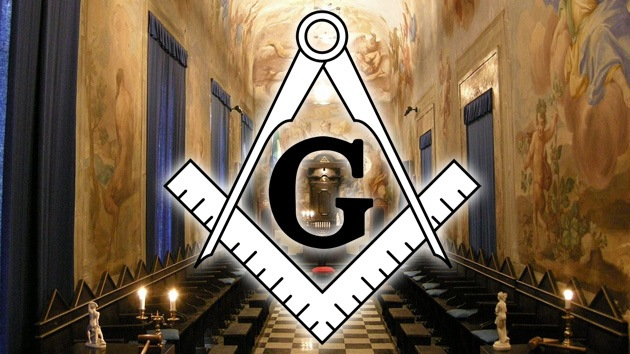

Masoneria

La francmasonería o masonería es una institución de carácter iniciático, filantrópico, simbólico, filosófico, discreto, armónico, selectivo, jerárquico, internacional, humanista y con una estructura federal, fundada en un sentimiento de fraternidad. Afirma tener como objetivo
la búsqueda de la verdad, el estudio filosófico de la conducta humana, de las ciencias y de las artes y el fomento del desarrollo social y moral del ser humano, orientándolo hacia su evolución personal, además del progreso social, y ejemplifica sus enseñanzas con símbolos y alegorías tradicionales tomadas de la albañilería y la cantería, más específicamente, del «Arte Real de la Construcción», es decir de los constructores de las catedrales medievales.
Aparecida en Europa entre finales del siglo XVII y principios del XVIII, la masonería moderna o «especulativa» ha sido descrita a menudo como "un sistema peculiar de moral, bajo el velo de alegorías y enseñado por símbolos". Se presenta a sí misma como una herramienta de formación, con un método particular que, basado en el simbolismo de la construcción, permite a sus miembros desarrollar su capacidad de escucha, de reflexión y de diálogo, para transmitir estos valores a su entorno.
La historia institucional de la masonería presenta numerosas disidencias, cuyas principales causas, con importantes matices y derivaciones, están relacionadas con la admisión de la mujer en las logias de hombres, la cuestión de las creencias religiosas o metafísicas, la naturaleza de los temas tratados o la forma de trabajar de las logias, así como con las bases sobre las que se fundamenta la regularidad masónica. La existencia de distintos puntos de vista sobre estos
y otros temas ha dado lugar al desarrollo de distintas ramas o corrientes masónicas, que a menudo no se reconocen entre ellas
| Masoneria |
Fundado
| Hiram Abif |
Alrededor del año 988 a.C |
|
| Fecha fundación |
Entre 1726 y 1728 |
La masonería segrega a hombres y mujeres en distintas logias.
La primera logia femenina en Inglaterra se creó en 1908. Su primer venerable maestro fue un varón. Después, el 100% de sus componentes fueron mujeres y se vetó la participación de ellos.
La masona británica entrevistada por la BBC aseguró que las actividades realizadas por hombres y mujeres son las mismas.
"Hacemos los mismos rituales, las mismas ceremonias, pero estamos completamente separados de ellos", dijo tras más de 21 años como parte de la asociación, lo que la convierte en uno de los miembros femeninos más veteranos de las logias de Inglaterra.
Pero la separación por sexos sigue teniendo detractores, también entre los propios masones.
Se estima que hay unos seis millones de masones en todo el mundo
Se reúnen en un templo al que llaman logia, ya que es donde los antiguos canteros se encontraban mientras trabajaban en una iglesia o catedral
Usan delantales o mandiles masónicos, que se remontan a la teoría de que la masonería evolucionó a partir de los canteros que los usaban para protegerse durante el corte de las piedras
El "tercer grado" es la etapa final antes de convertirse en masón de pleno derecho.
La ceremonia implica un exhaustivo interrogatorio, que es de donde procede la expresión "someter a alguien al tercer grado"
Algunos masones reconocidos fueron el ex primer ministro británico Winston Churchill o los escritores Arthur Conan Doyle, Rudyard Kipling y Oscar Wilde